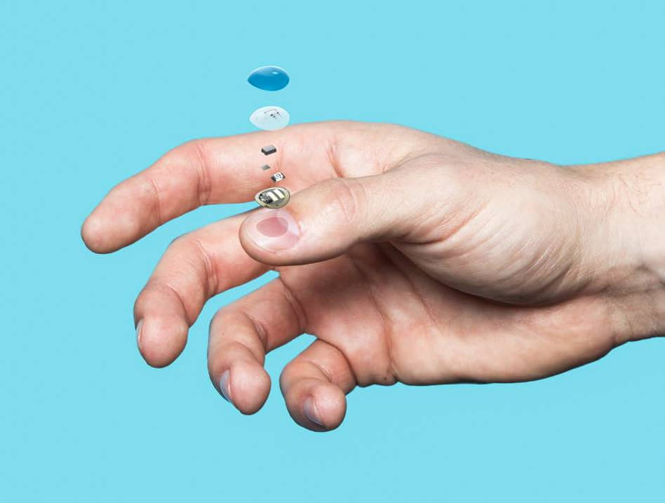
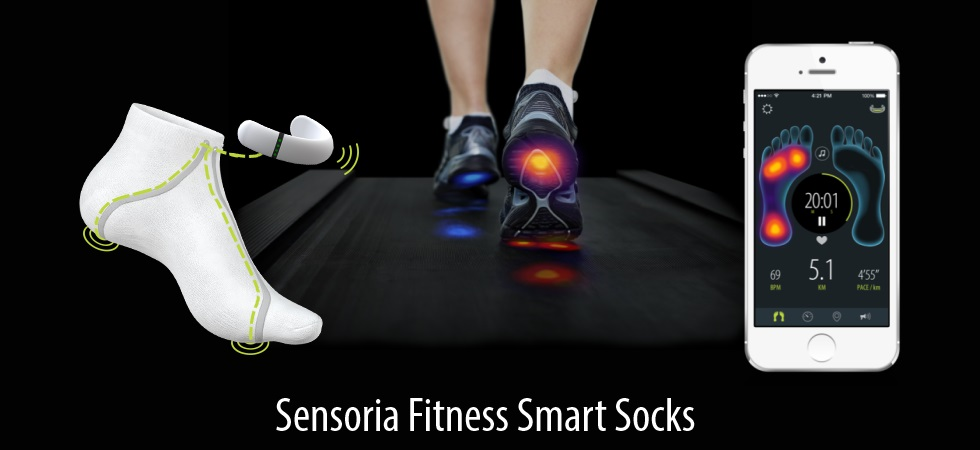
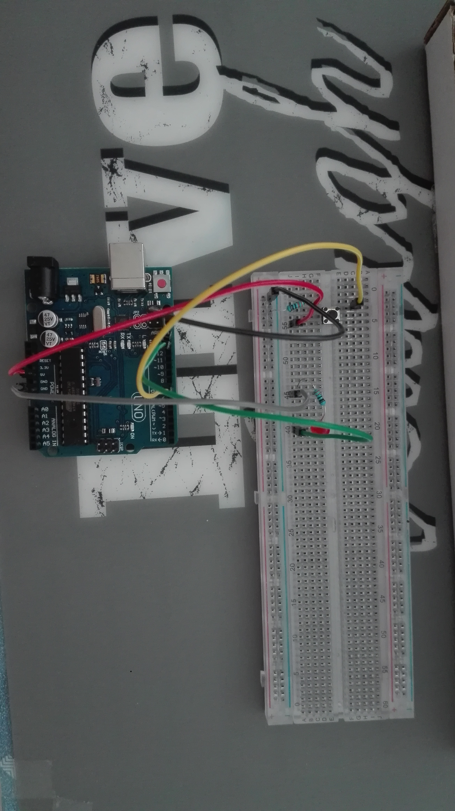
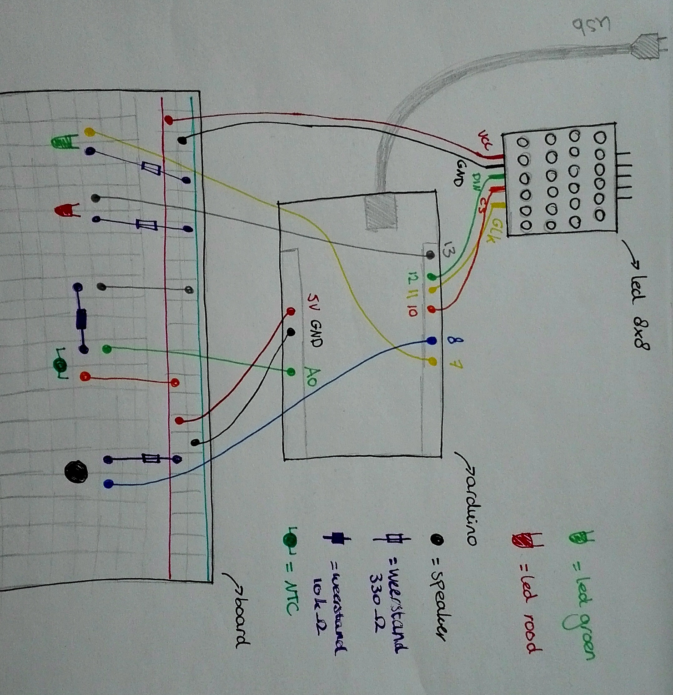
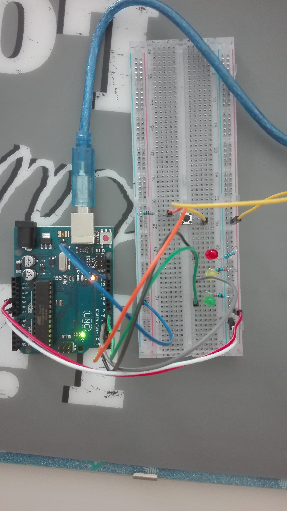
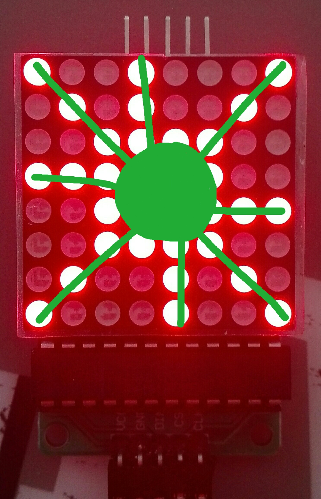
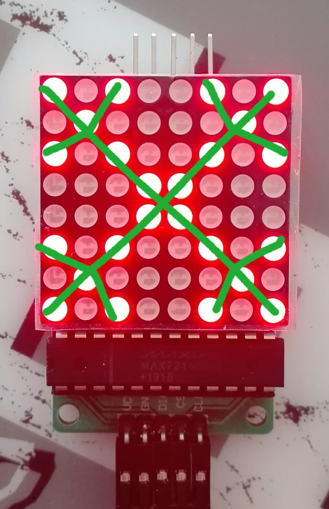

Research
My Skin Track UV
De My Skin Track UV is gemaakt vanuit L’Oréal in samenwerking met La Roche Posay. Het is een kleine, draagbare sensor die meet hoe lang en sterk je lichaam aan uv-straling wordt blootgesteld. Je kan deze dragen op één van je nagels. De sensor meet de uv-straling, uv-a en uv-b. Ook detecteert de bijbehorende app de mate van vervuiling, pollen en vocht. Als je de sensor tegen je smartphone aan houd (waar de app op staat) wordt de data geüpload.
Er is gebleken dat door deze sensor er veiliger wordt gezonnen en dat gebruikers meer zonnecrème gebruikten en vaker in de schaduw gingen zitten.
De sensor heeft geen batterij nodig, maar werkt op zonne-energie en wordt door je smartphone geactiveerd. Deze sensor kan je inmiddels voor ongeveer zestig dollar kopen op de Amerikaanse markt.
Ik vind dit zelf een goede uitvinding, omdat er veel mensen zijn die te lang in de zon zitten en dit eigenlijk helemaal niet goed is voor je. Mensen worden door deze uitvinding inderdaad bewuster van de uv-straling en het helpt om schade aan je lichaam te voorkomen.
Bekijk het filmpje

Sensoria Fitness Smart Socks
De Sensoria Fitness Smart Socks zijn slimme sokken. Ze zijn uitgerust met comfortabele, textiel druksensoren waardoor hardlopers van elke stap weten hoe ze hun voeten hebben neergezet en hoe lang ze de grond raken. Ze informeren ze realtime wanneer je met de hiel of met de bal van je voet op de grond drukt. Via de Sensoria Fitness app kan je je voetlandingstechniek en voetwarmte in de gaten houden, maar ook kan je stemfeedback ontvangen over bijvoorbeeld het aantal stappen per minuut.
Ik vind dit een goede en leuk idee van een wearable wearable omdat je zo blessures kan voorkomen tijdens het hardlopen. Ook kan dit ervoor zorgen dat je gemotiveerd raakt tijdens het sporten, omdat je bijvoorbeeld x aantal stappen wil halen per minuut.
Bekijk het filmpje

Tinkering
Button
Voor mijn eerste tinkering experiment heb ik gebruik gemaakt van de button die in het pakket van Arduino zit. Als eerst heb ik een simpele opstelling gemaakt om uit te testen hoe je de button in het circuit zet. Wanneer je op de button klikt gaat het ledje aan, en wanneer je nog een keer op de button klikt gaat deze weer uit. Hieronder staan de opstelling, de gebruikte code en foto's.
Bekijk het filmpje (deel 1)

Toen ik begreep hoe ik een button in het circuit moest zetten, ben ik hiermee verder gegaan. Ik heb daarna namelijk een opstelling gemaatk met drie buttons. Wanneer je de eerste keer op de button klikt gaat het rode ledje aan, bij de tweede keer de gele, bij de derde keer de groene led en als je voor de vierde keer op de button klikt gaan alle ledes uit. Ook hiervan staan de opstelling, gebruikte code en foto's hieronder.
Bekijk het filmpje (deel 2)


Design and Build & Showcase
Voor de challenge van Arduino heb ik een prototype gemaakt van een nieuw soort wearable. Iedereen heeft namelijk wel eens dat je naar buiten kijkt en je twijfelt of je een korte broek aan kan. Ik heb een prototype gemaakt die jou hier bij helpt!
Het werkt alsvolgt. In een ring zit een NTC met een weerstand van 10 kΩ, als de waarden van de NTC boven de 506 ligt (wat ongeveer neerkomt op 20 graden celsius) geeft de ring groen licht weer en een vrolijk muziekje. Als de waarde onder de 506 ligt, klinkt een verdrietig liedje en brandt er een rood ledje. Ik heb er voor gekozen dat je en een kleurtje ziet branden en een geluidje hoort, omdat dan iedereen de weareble kan gebruiken (ook slecht horende en slecht ziende mensen).
Wanneer je daarna naar je kleding kast loopt en hem opent doet, zie je op je korte broek ook een wearable zitten. Dit is een ledje die een smiley of zonnetje aangeeft of een verdrietig gezichtje met een soort sneeuwvlokje.
Ik moet eerlijk zeggen dat je het zonnetje en sneewuvlokje niet direct ziet, maar me een beetje fantasie zie je het wel!


Om dit prototype te bouwen heb ik een opstelling gemaakt met het led van 8x8, groen ledje, rood ledje, NTC, speaker en natuurlijk de arduino. Hieronder staat een tekening van mijn opstelling. Omdat het natuurlijk niet lukte om echt een interactieve ring te maken en een weareble te maken in mijn kleren, moet je het alsvolgt zien. Het board, met de objecten, stelt de ring voor en de led van 8x8 zit eigenlijk in je kleding. Ook zou dit draadloos moeten zijn, maar het is natuurlijk maar een prototype.
Filmpje van het protype (zorg ervoor dat je geluid aan staat). Eerst is de temperatuur in mijn kamer onder de waarde van 506, door middel van mijn vingers warm ik de NTC op waardoor de waarde boven de 506 komt.
Filmpje van het gebruik ervan. Je ziet dat ik naar buiten kijk en twijfel of ik een korte broek aan kan. Vervolgens steek ik mijn hand uit het raam. Ik klik op de ring om hem te activeren en daarna krijg ik een vrolijk liedje te horen en zie ik een groen ledje branden. Wanneer ik mijn kledingkast open doen zie ik een smiley verschijnen op mijn broek.
Reflect
A
Ik .
Refct
I!
ErvR
Ik vent.

.png)